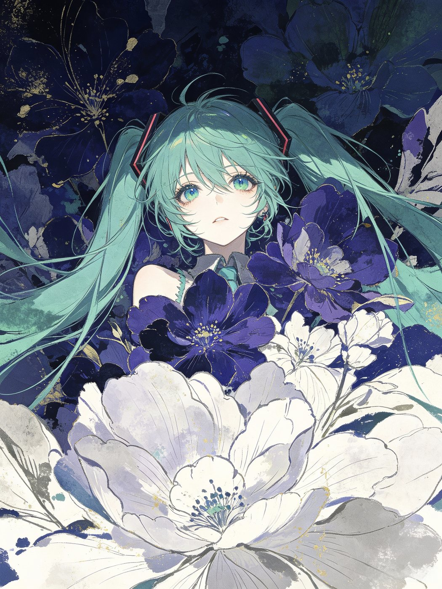

柳卿烟
@liu-qinyan · 写字与代码
写作者
前端
二次元
你好，我是柳卿烟。
白天写代码，晚上写字。喜欢把看到的东西整理成能留下来的形状——一段文字、一张图、一个能打开的链接，都算。
这个博客是我的一个小角落。这里会有读过的书、看过的番、做过的东西，和一些没什么用但舍不得丢的日常。写得不快，也不追热点。如果某一句碰巧被你喜欢，那就很好。
会一点的东西
前端
HTML / CSSJavaScript静态站点无障碍
设计
排版色彩系统Material 3信息层次
写作
散文随笔读书笔记技术记录
工具
GitLinuxPhotoshopPython
时间线
2026-09
这个博客上线，固定链接落地，开始认真写字。
2026-06
开始系统学习 Material 3 设计体系，做了一些配色实验。
2026-03
给一个开源主题提了第一个 Pull Request，被合并了。
2025-11
第一次把想法做成了能被人打开的东西。
找我
- 邮箱629193513@qq.com
- GitHub@liu-qinyan
- 这个站的源码liu-qinyan/LQY
关于这个站